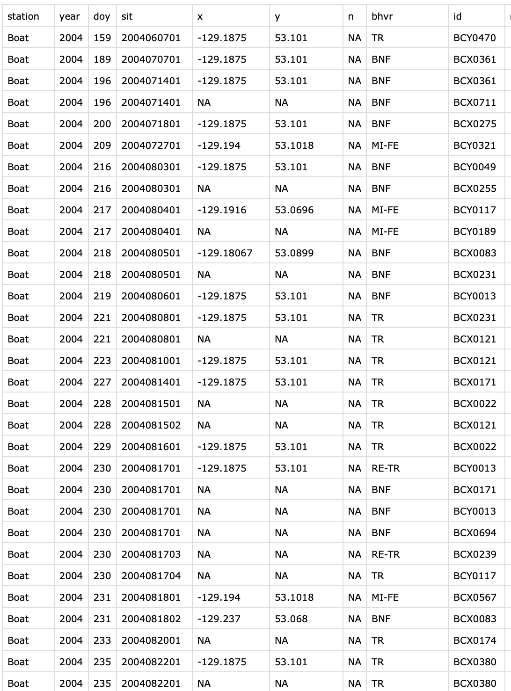
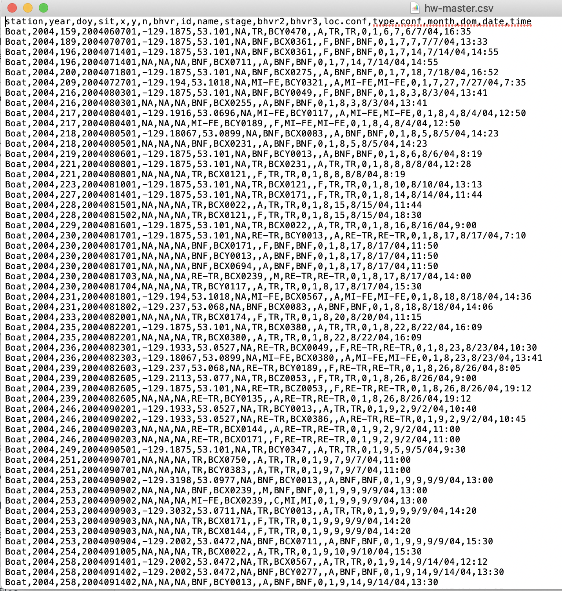
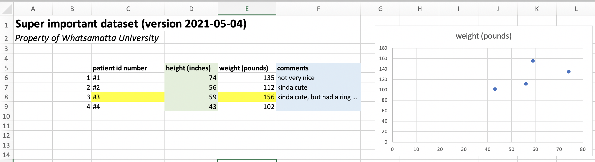
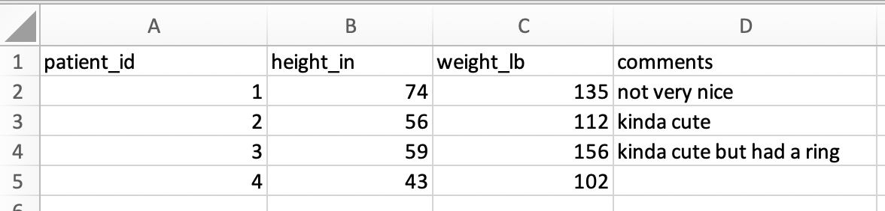
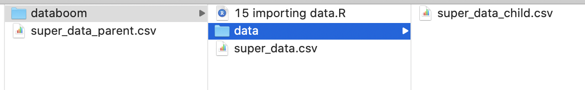
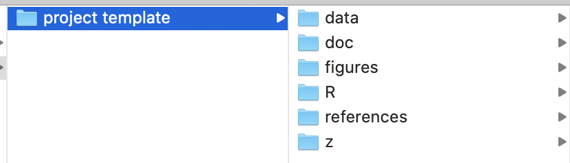

Module 13 Importing data
Learning goals
- Understand what a
.csvfile is, and why they are important in data science - How to format your data for easily importing data in
R - How to load, or “read,” your data into
R - How to set up your project directory and read data from other folders
To work with your own data in R, you need to load your data in R’s memory. This is called reading in your data.
Reading in data is simple and easy if your data are saved as a .csv, a comma-separated file. You can find functions for reading all sorts of file types into R, but the quickest way to begin working with your own data in R is to maintain that data in .csv’s.
.csv files
When you preview a .csv, it looks something like this:
 A neat spreadsheet of rows and columns.
When you open up this same dataset in a simple text editor, it looks like this:

This looks scary, but it is actually really simple. A .csv is a simple text file in which each row is on a new line and columns of data are separated by commas. As a simple text file, there is no fancy formatting. There are no “Sheets” or “Tabs,” as you would find in GoogleSheets or Excel; it is a simple ‘flat’ file.
One of the major advantages of working with .csv’s is that the format is cross-platform and non-proprietary. That is, they work on Windows, Mac, Linux, and any other common type of computer, and they do not require special software to open.
Data format requirements
For those of us used to working in Excel or Numbers, it will take some adjustment to get into the habit of formatting your data for R. We are used to seeing spreadsheets that look something like this:

To read a .csv into R without issues or fancy code, this spreadsheet will need to be simplified to look like this:

Workflow for formatting your data
Below is the general worfklow for preparing your data for R is the following:
1. Get your data into .csv format. In Excel and Numbers, you can use ‘Save As’ to change the file format. In GoogleSheets, you can ‘Download As’ a .csv. This will remove any colors, thick lines, special fonts, bold or italicized font styles, and any other special formatting. All that will be left is your data, and that’s the way R likes it.
2. Remove blank columns before and in the middle of your data.
3. Remove elements such as graphs.
4. Simplify your ‘header.’ The space above your data is your spreadsheet’s header. It includes column names and metadata like title, author, measurement units, etc. It is possible to read data with complex headers into R, but again we are going for simplicity here, so we suggest (1) simplifying your header to contain column names only, and (2) moving metadata to a README.txt file that lives in the same folder as your data.
5. Simplify column names. Remove spaces, or replace them with ., - or _. Make your column names as simple and brief as possible while still being informative. Include units in the column names, as in the screenshot above. Be sure that each column has a name.
6. Remove all commas and hashtags from your dataset. You can do this with the ‘Find & Replace’ feature built-into in most spreadsheet editors.
Reading in data
The general workflow for reading in data is as follows:
- In
RStudio, set your working directory. - Place your data file in your working directory. (See the section below if you want to keep your data somewhere else.)
- In your
Rscript, read in your data file with one of the core functions below.
You can use this simple data file, super_data.csv, to practice.
Core functions for reading data
To become agile in reading various types of data into R, there are three key functions you should know:
read.csv()
This is the base function for reading in a .csv.
df <- read.csv("super_data.csv")This function reads in your data file as a dataframe. Save your dataset into R’s memory using a variable (in this case, df).
df
patient_id height_in weight_lb comment
1 1 74 135 not very nice
2 2 56 112 kinda cute
3 3 59 156 kinda cute but had a ring
4 4 43 102 so small!The read.csv() function has plenty of other inputs in the event that your data file is unable to follow the formatting rules outlined above (see ?read.csv()). The three most common inputs you may want to use are header, skip, and stringsAsFactors.
Use the
headerinput when your data does not contain column names. For example,header=FALSEindicates that your datafile does not have any column names.Use the
skipinput when you want to skip some lines of metadata at the top of your file. This is handy if you really don’t want to get rid of your metadata in your header. For example,skip=2skips the first two rows of the datafile beforeRbegins reading data.Use the
stringsAsFactorsinput when you want to make absolutely sure thatRinterprets any non-numeric fields as characters rather than factors. We have not focused on factors yet, but it can be frustrating whenRmistakes a column of character strings as a column factors. To avoid any possible confusion, usestringsAsFactors=TRUEas an input.
For example, here is how to read in this data without column names:
df <- read.csv("super_data.csv",skip=1,header=FALSE)
df
V1 V2 V3 V4
1 1 74 135 not very nice
2 2 56 112 kinda cute
3 3 59 156 kinda cute but had a ring
4 4 43 102 so small!If you do this without setting header to FALSE, your first row of data gets used as column names and it becomes a big ole mess:
df <- read.csv("super_data.csv",skip=1)
df
X1 X74 X135 not.very.nice
1 2 56 112 kinda cute
2 3 59 156 kinda cute but had a ring
3 4 43 102 so small!readr::read_csv()
This function, from a package named readr, becomes useful when you begin working with (1) data within the tidyverse, which you will be introduced to in the next module, and/or (2) very large datasete, since it reads data much more quickly and provides progress updates along the way.
When you use read_csv() instead of read.csv(), your data are read in as a tibble instead of a dataframe. You will be introduced to tibbles in the next module on dataframes; for the time being, think of a tibble as a fancy version of a dataframe that can be treated exactly as a regular dataframe.
df <- readr::read_csv("super_data.csv")
df
# A tibble: 4 x 4
patient_id height_in weight_lb comment
<dbl> <dbl> <dbl> <chr>
1 1 74 135 not very nice
2 2 56 112 kinda cute
3 3 59 156 kinda cute but had a ring
4 4 43 102 so small! readRDS()
Another niche function for reading data is readRDS(). This function allows you to read in R data objects, which have the file extension .rds. These data objects need not be in the same format as a .csv or even a dataframe, and that is what makes them so handy. A colleague could send you an .rds object of a vector, a list, a plotting function, or any other kind of R object, and you can read it in with readRDS().
For example, super_data.rdscontains a tibble version of the dataframe above. When you read in that .rds file, it is already formatted as a tibble:
df <- readRDS("super_data.rds")
df
# A tibble: 4 x 4
patient_id height_in weight_lb comment
<dbl> <dbl> <dbl> <chr>
1 1 74 135 not very nice
2 2 56 112 kinda cute
3 3 59 156 kinda cute but had a ring
4 4 43 102 so small! Reading data from other folders
The data-reading functions above require only a single input: the path to your data file. This path is relative to the location of your working directory. When your data file is inside your working directory, the path simplifies to be the same as the filename of your data:
df <- read.csv("super_data.csv")Sometimes, though, you will want to keep your data somewhere nearby but not necessarily within your working directory. Consider the following scenario, in which three versions of the “super_data.csv” dataset occur near a working directory being used for this module:

We have a version within the same directory as our R file (i.e., our working directory), another version within a child folder within the directory (i.e., a subfolder), and another version in the parent folder of the working directory.
To read a file from a child folder, add the prefix, ./<child name>/, to your command:
df <- read.csv("./data/super_data.csv")To read a file from a parent folder, add the prefix, ../, to your command:
df <- read.csv("./data/super_data.csv")Managing files
Now consider the following scenario, in which your project folder structure looks like this:

This structure can be a effective and simple way of organizing your files for a project, and we recommend using it.
Here’s what these child folders should contain.
./data/contains data, of course../doc/contains documents, such as manuscript drafts../figures/contains files for graphs and figures../R/containsRscripts, of course../references/contains journal articles and other resources you are using in your research.
Since your R code is going into the R child folder, that is what you should set your working directory for those R scripts to. In that case, how to read data from the data folder, which is a separate child folder of your parent folder?
Here’s how:
df <- read.csv("../data/super_data.csv")Review exercise
NOTE: Under construction!